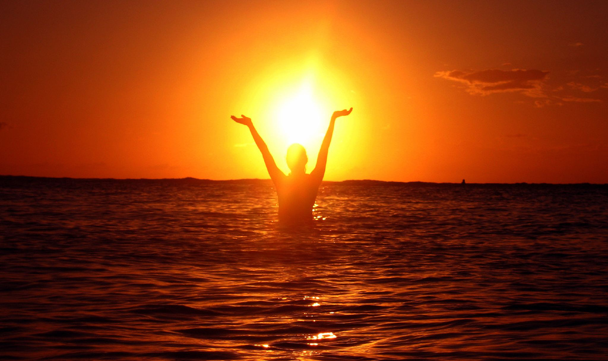

DevBootcamp - Cultural Blog #7
My Values in Life
DevBootcamp asked me, "Think of the times in your life where you've been the happiest, proudest, or most satisfied." And my simple answer is . . .
--Challenge--
"In our lifetime, we can see that there are two types of people in this world: autonomous or robotic. Challenge is the key to becoming autonomous." - Nam Hoang Nguyen.
Imagine your heart is racing at the sound of the crowd cheering. The gun fired, "BANG!" You have trained your heart and soul to beat all the other cross-country runners by putting yourself through the test. And finally, as you cross that finish line as the #1 runner, you begin to jump in an uproar at how you have FINALLY done it! You represented yourself, your family, and your country. That happened to me, although not at the olympic level. The thought of not giving up once, and giving your best shot even if you know that the challenge is against you, you still do it and won. That feeling is breath-taking.
If Steve Jobs never challenged himself to create the Mac, he would still follow other's people's orders and no advancements would be made. If man never dared or rather challenged himself or challenged the world around him, he would never create anything anew.
To challenge yourself is to push your limits. If you choose to NOT be a normal person, challenge is the key. Challenge knows no discrimination. It knows no man nor woman, nor race, nor age. I choose to continually challenge myself because I care about discovering more about myself and what I am capable of. I dream the dream and so does many others. But how you accomplish the dream is through action. When I crave the challenge, I dispelled my fear. Only through this means has my dream became more real to me, rather than me at the beach during sunset trying to grab the sun.
